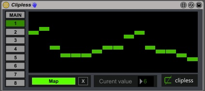

Table of Contents
#+TITLE Clipless
1 Clipless
Clipless is an experimental device that allows basic sequencing of effects in Ableton Live. Because of the abundance of generative devices, the idea is to explore complete song construction without using Ableton's primary means of doing this, clips.
2 Reasons to go Clipless
- Clips add additional overhead and add an extra layer of complexity
- As evidenced by many forum posts, there are some fundamental conceptual issues with clips that can lead to frustration
- Clips don't adhere to the single responsibility principle (a software development concept). I.e. duplicating clips is the primary way of creating variations and also the primary way of grouping clips you want to play together.
3 How it works
Figure 1: Add the effect alongside the device that you want to sequence (reccomended as the best way to keep things organized although doesn't have be beside device)
Figure 2: Move the sliders of the main view to create your basic arrangement. Each slider amount represents the a single bar. The values here are global across your project and is what will link events and changes across the project.

Figure 3: Map your parameters using one or more of the bank of mappable parematers on the device. Change how each paremater maps up each section.
4 Rationale
- Is intended to compliment the many existing effects that provide sequencing and modulation.
- Intended to provide control on the macro/arrangement level. I.e. to transition between sections of your arrangement
- Is intended to be extremely minimal and meraely a glue device, the concept being the primary focus
- May make it easier to break out of "loopitis"
- May be of use at an early exploratory part of the composition process before reverting to more traditional workflow
5 Future development
- Improve interface and usability
- Allow sequencing with Push
- Allow for finer grained control (perhaps with a second device)